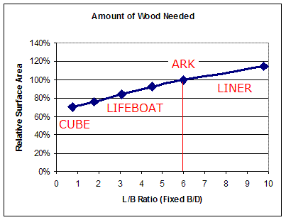

While there could be other solutions to the design of Noah's Ark that
would still comply
with the biblical specifications. Here, we attempt to combine modern knowledge of
how a ship behaves in the water with some of the surprising technology of
ancient shipwrights.
Demonstrated. Is the rigid sail really necessary?
And why the underwater projection? ... It almost looks like the bulbous bow
of a modern tanker, or is it related to the ramming bow of a Greek
trireme?
These
features work together to control the Ark, using the wind (Gen 8:1) to
maintain direction and avoid broaching. > See
video demonstrations here
That Sail...
The rigid, fin-like structure at the bow of the Ark helps to keep the vessel
pointing downwind. This works in conjunction with a submerged projection at the stern,
causing the
vessel to align perpendicular to wind driven waves. This gives the most
comfortable ride possible, and lowers the risk of capsize in extreme seas. It
also makes some sense of the otherwise mysteriously long proportions of this
particular 'lifeboat"1. Noah's Ark is six times as long as it is wide, yet most
lifeboats are more stout than this. So if it wasn't meant to travel fast, why
was Noah's "lifeboat" so slender?
Enough words. Let's see the "sail-fin" in action.
Big Turn-Around
The 2m (6ft) fibreglass model is weighted to give a draft of around 40% of
the hull depth. The model was pushed into a light headwind (approx 8 knots).
With initial momentum it stays on course for a while, until it slows and
the waves begin to knock it off course. The sailfin now catches wind and
begins to turn the vessel. The waves try to hold the hull at 90 degrees (beam
sea, waves approaching from the side). This is the worst situation for a
ship - uncomfortable in small waves and dangerous in a heavy sea.
The wind continues to drive the bow around to a
following sea. This brings the vessel under control without any effort
from the
crew.
If it "just had to float" it would have saved Noah a lot of time
and effort to build a "just had to float" kind of boat. A long hull is
more difficult, so it needs a good reason, like speed for instance. This
is what the clipper sailing ships of the 1800's were designed for. Noah's Ark
had a similar length to breadth ratio, yet it didn't have to race anywhere.
It would have been tempting to shorten the vessel and save some work. Here's
why;
1. It Must Be Strong
As waves pass under the Ark, the middle experiences bending forces
alternately upward (hogging) and downward (sagging). A ship hull has to
act like a bridge, only worse - a bridge one minute and a see-saw the
next.
The longer the hull, the greater the bending effect. Now Noah has
to put add wood to make the middle strong enough. If it were half as long the wave bending effect be approximately halved.
See Wave Bending Moment2.

2. Surface Area to Volume Ratio
A cube has the highest volume with the least surface area (for rectangular
prisms). As the hull grows longer and narrower, more wood is needed to
achieve the same total volume.
The amount of wood increases with the slenderness of
the hull, and logically, Noah's workload increases in proportion.
Using proportions closer to a lifeboat would save another
20% or so.
3. Stability
A shorter, wider vessel is more stable. This was a clear conclusion of the
Korean study. The most stable "Ark" had a length-to-breadth ratio similar to
lifeboat.
Hull 10 topped the comparison. Note that the
Korean study assumed a random sea rather than a regular sea which a large
scale wind would produce. (Gen 8:1)
Broaching the Subject...
Broaching4 is when waves turn a ship side-on. This can
even result in capsize in heavy seas. Any
long object floating in the water will be turned sideways (wave induced yaw).
Basic physical laws drive a buoyant object towards its lowest energy state, and roll
motion has the least inertia.
Without power or navigational control, a ship is simply "caught in the
trough of the waves". The proportions of Noah's Ark are no exception. In
fact, it's long length is a disadvantage in a regular sea (Gen 8:1) where a steady wind
generates near parallel wave fronts.
Watch what happens seconds after a 6ft (2m) model of biblical proportions (300x50x30)
is left drifting in wind-generated waves.
No Escape
Driven by the dynamics of wave motion, a simple box with the proportions
of Noah's Ark drifts in a beam sea.
The model turned immediately and never recovered. Avoiding a beam sea
becomes a top priority in heavy weather. For a drifting ship (without
propulsion) there is no escape unless
something can overpower the turning force (yaw) of the waves.
The sail-fin must be big enough to overcome the turning effect (yaw) of the
waves. This means it can't be
trivial.
However, the upturned stems of ancient ships and the huge areas of sail on
the "windjammers" mean that a sailfin of a large size is viable. Since
no adjustments are needed, a rigid wooden structure can be used, rather than
troublesome canvas. It must also be big enough to ensure correct operation even
if the wind begins to die down. If it is unable to overcome wave yaw at the most
dangerous time, it has failed.
One side effect of the sailfin is that it helps to dampen roll and increase
roll inertia. A century ago as steam power was replacing sail, roll was suddenly
a big problem. The huge masts had been suppressing roll
motion.
Smaller Sailfin
The optimum size of the sailfin is dependent on many factors. Wind speed,
the amount of fetch available to develop waves, the presence of other waves
generated by previous or distant wind.
Another factor when using a scale model is that the
relative strength of wind and water do not scale linearly. Wind
is also very height dependent, so a full-scale vessel interacts with
higher wind velocities. The size and shape of the waves is another factor.
While the sail-fin pulls the bow around to point with the wind, the submerged stern projection does
exactly the opposite - prevents the stern being pushed to the front.
Does it really work? This feature is a like a skeg or a fixed rudder.
Even on unpowered barges design to be towed, a skeg helps to give directional
stability in the open sea. Most ships have a skeg-like structure of some
description. The reason? So the stern can't go sideways.
A submerged projection may look familiar - like the ramming bow of a Greek
Trireme. However, depictions of ships from thousands of years earlier show a
similar feature. Historians call it a mystery.3 It makes more sense that the
first ship in post-flood history (Noah's Ark) set the precedent, and this became
the standard way to do things - even when a ship is too small to really need
it.
Canceling Each Other Out
To test the effect of the skeg, the sail-fin was moved from bow to stern. Now both are fighting
against each other - the sail-fin tries to push the stern around while the skeg
is trying to stop it.
The result? They cancelled each other out and the model
remained in its natural position - almost exactly in a beam sea.
1. A shorter hull is stronger, and being wider and
taller, would also be more stable. Strength and stability both push for a
shorter length. See Why
Such a Long Hull?Return to text
3. Could ancient ships give any clues about Noah's Ark?
Since the Ark is the first ship in our history, it is like a prototype for
Noah's descendents. If certain features emerge in the depictions of ancient
ships they might be derived from Noah's Ark. See Flood
Legends. Return to text